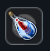
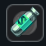

System Staminy określa, jak długo gracz może polować, otrzymując pełne doświadczenie.
Odzyskiwanie staminy może odbywać się w dowolnym miejscu wewnątrz Strefy Ochronnej (Protection Zone).
Możliwe jest również regenerowanie staminy za pomocą Mikstur Staminy (Stamina Potions), które można zdobyć jako łupy z Bossów.

Możliwe jest również nabycie Eliksiru Skondensowanej Staminy w sklepie, który przyspiesza regenerację staminy o 15 sekund, oprócz normalnego odzyskiwania.

Ważne Uwagi:
- Stamina nie regeneruje się, gdy gracz poluje.
- Tylko Strefy Ochronne lub Mikstury Staminy mogą odzyskać staminę.
- Gracze Premium posiadają szybszą regenerację.